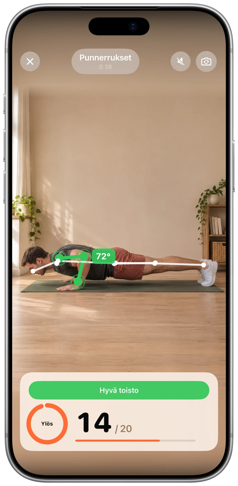
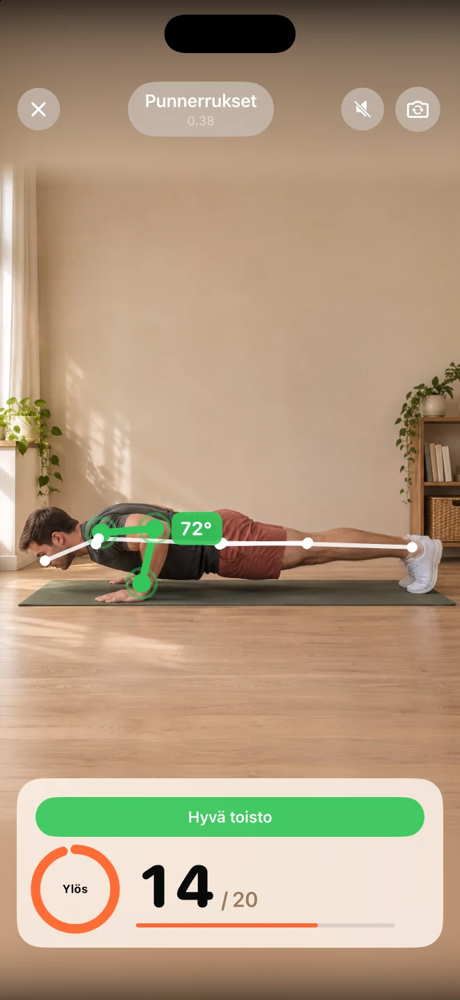
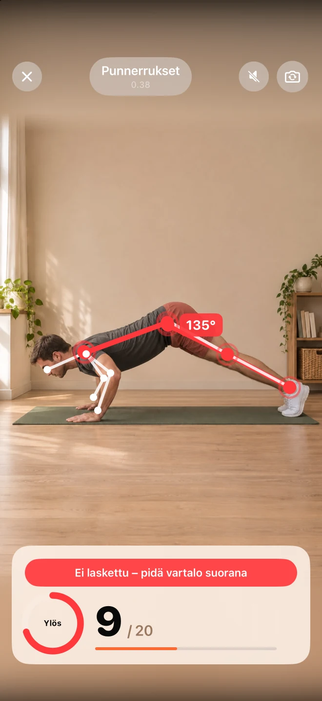
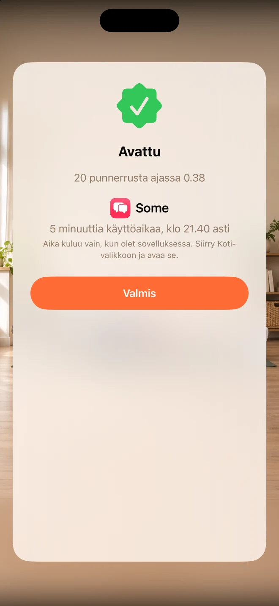

Valitse omat häiriötekijöitäsi.
Valitse sovellukset, joista haluat pitää hieman etäisyyttä. Unlocky käyttää Applen Screen Time -toimintoa pitääkseen ne lukittuina.
Pieni liike ennen sisältövirran alkua.
Vähemmän automaattiohjelmointia, enemmän sinua.
Lukitse sovellukset, jotka vievät päiväsi. Tee lyhyt sarja punnerruksia, kyykkyjä tai haarahyppyjä ja ansaitse muutama minuutti käyttöaikaa.
Ilmainen · ei tilausta · ei käyttäjätiliä.


Sovelluksen kuvakaappaus
Miksi pidät tästä
Valitse sovellukset, joista haluat pitää hieman etäisyyttä. Unlocky käyttää Applen Screen Time -toimintoa pitääkseen ne lukittuina.
Valitse punnerrukset, kyykyt tai hypyt. iPhone-kamerasi laskee toistot liikkuessasi ja antaa reaaliaikaista palautetta.
Aseta omat palkintosi ja päivittäiset rajasi. Ansaitut minuutit lasketaan sovellusta käytettäessä, minkä jälkeen lukitus palautuu.
Tutustu tarkemmin
Todelliset näyttökuvat. Parempi käsitys siitä, mitä sisällä on.



FAQ
Vastauksia ennen kuin aloitat
Unlocky käyttää Applen Screen Time -toimintoa. Valitset sovellukset ja annat käyttöoikeuden asennuksen yhteydessä. Voit peruuttaa käyttöoikeuden iPhone-asetuksissa.
Unlocky ei tallenna sinusta videota. Kameran kuvat analysoidaan reaaliajassa iPhonessasi. Videoita ja valokuvia ei tallenneta eikä lähetetä palvelimelle.
Kyllä. Voit valita punnerruksia, kyykkyjä tai hyppyjä ja määrittää, kuinka monta minuuttia yksi sarja antaa palkinnon. Päivittäinen maksimi auttaa sinua pitämään rajat.
Kyllä. Unlocky ei vaadi tilausta tai maksua. Se vaatii iPhonen, jossa on iOS 17 tai uudempi.
Ilmainen · ei tilausta · ei käyttäjätiliä.
Liiku omassa tahdissasi ja lopeta, jos jokin sattuu. Jos sinulla on jokin terveydellinen ongelma, kysy lääkäriltä ennen uuden harjoitusohjelman aloittamista.